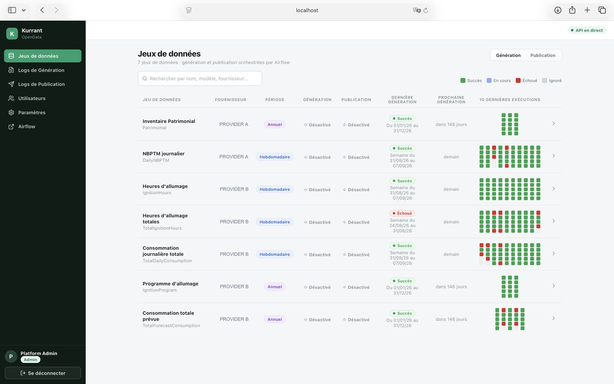
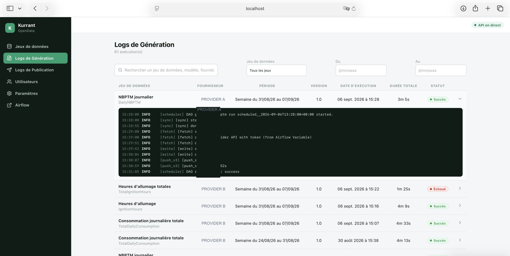
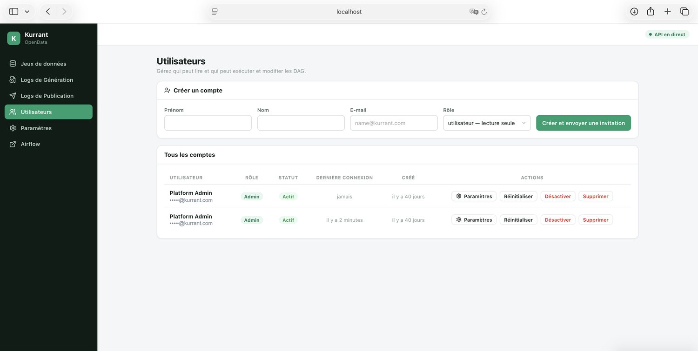
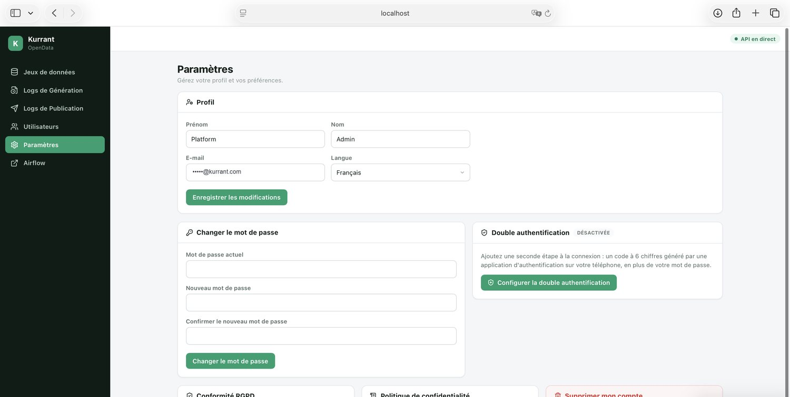

Internship — May to August 2026
OpenData Platform at Kurrant
Public authorities need their street-lighting data delivered on a schedule, in a standard shape, correctly. The platform that does it pulls from third-party asset-management systems, normalises the output, stores it, and publishes to client SFTP servers without anyone touching a button. I rebuilt it and shipped its first end-to-end production release.
- Role
- Software engineering intern
- Company
- Kurrant, Madrid
- Stack
- Airflow, Node.js, PostgreSQL, MongoDB, AWS S3, Docker
- Outcome
- Became its own standalone repository
This is commercial work on an internal platform. The screenshots below are the real thing, running locally, with third-party provider names and account emails redacted. The source code stays private.
First, choose the orchestrator properly
The team needed a scheduler and had a preference to argue about. Rather than argue, I ran a bake-off. I built working mocks in both Dagster and Airflow, then ran a DAG-ordering feasibility study against the real dependency shapes the platform would have to express.
Airflow won on the criteria that mattered here, and I implemented it in production. The value of doing it this way was not the answer — it was that the decision came with evidence attached, and nobody had to relitigate it three months later.
Then build the platform
- The new OpenData platform — the user interface, the version-history interface, and the API scripts, integrated as Airflow DAGs with push to S3. It grew large enough to be split out into its own repository.
- SFTP publication, so finished datasets land on client servers on schedule without an operator in the loop.
- Legacy history migration, carrying the existing record forward rather than starting the history at the cutover.
- Timezone-aware scheduling, which sounds small until a daylight-saving change silently shifts every delivery by an hour.
- Data-correctness fixes across seven datasets — the unglamorous work that decides whether a public authority trusts the feed.
- GDPR export and erasure, and two-factor authentication, both requirements for handling this data in the EU.
The platform




Once a dataset is configured, generation and publication are self-managing. That was the point of the rebuild: the previous arrangement needed a person, and a person is exactly what you do not have at three in the morning.